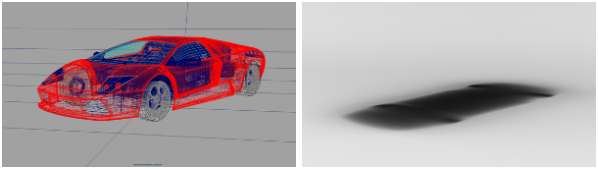
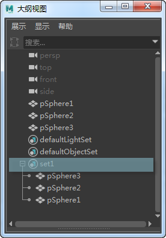
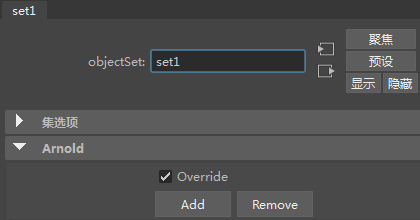
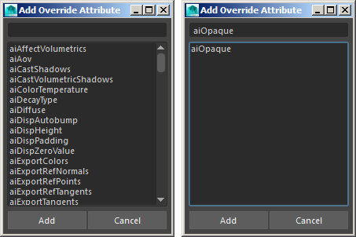
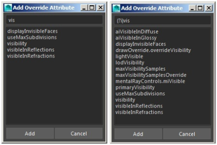

Maya 中的集指的是对象或组件（例如几何体对象或灯光）的集合。将对象分组成多个集，可以一次对多个对象执行特定更改。
MtoA 可以使用 Maya 集来将 Arnold 渲染覆盖应用于集内对象。这样，您就可以覆盖集成员对象的任何属性，也意味着您可以影响大量对象，而不必逐个更改特性。
MtoA 不支持多个覆盖集使用同一节点获得不同结果。您应该避免这种情况，否则最终可能会出现不可预测的结果。
假设要创建一个只含汽车阴影的 ambient_occlusion 渲染层。使用覆盖集时，您只需要：

primary_visibility 覆盖应用于其集的汽车模型（左）。汽车的阴影通过地板几何体上的 ambient_occlusion 着色器捕捉（右）。
要使用覆盖集，请在 Maya 中创建一个集作为对象集合，然后在“大纲视图”(Outliner)中选择该集：

然后，打开属性编辑器，打开“Arnold”选项卡，确保已启用“Ai 覆盖”(Ai Override)，然后单击“添加”(Add)。

随后将看到一个窗口，其中列出了一长串可覆盖的属性。
请注意，如果集中包括许多对象，“添加覆盖属性”(Add Override Attribute) 窗口的调用速度可能较慢。在某些情况下，覆盖属性窗口可能要花一分钟左右才能显示。这是因为它需要对照选定的对象检查数百个属性。因此，选定的对象越多，速度会变得越慢。
一个建议的解决方法是：

搜索字段可用来过滤属性
可供选择的属性有很多，请选择需要的属性（如果愿意，可以选择多个属性），然后单击“添加”(Add)。
窗口顶部有一个文本字段，可用来过滤所需的属性。它支持所有正则表达式功能（使用 Re Python 库）。
例如，如果在查询前希望过滤器忽略大写类型 (?i)：

默认情况下，文本字段返回的内容与键入内容精确匹配（左）。在文本前添加 (?i) 会显示所有匹配项（右）。
您还可以单击属性编辑器上的“移除”(Remove)按钮，从覆盖集中移除相关属性。
集中还可以嵌套其他集。覆盖集将覆盖它所含的任何集中的属性，进而覆盖子集所含内容的属性。这是一个非常有用的功能，可让您根据需要打开和关闭不同子集中的各种功能。
以下两个子主题介绍了使用覆盖集的两个示例：
* [Example One](topicid=arnold_for_maya_override_sets_am_Example_One___Nested_groups_html) : Changing the render properties of multiple geometry objects.
* [Example Two](topicid=arnold_for_maya_override_sets_am_Example_Two___Out_Matte_Opacity_html) : Changing the behavior of different shaders by assigning their attributes to override sets.